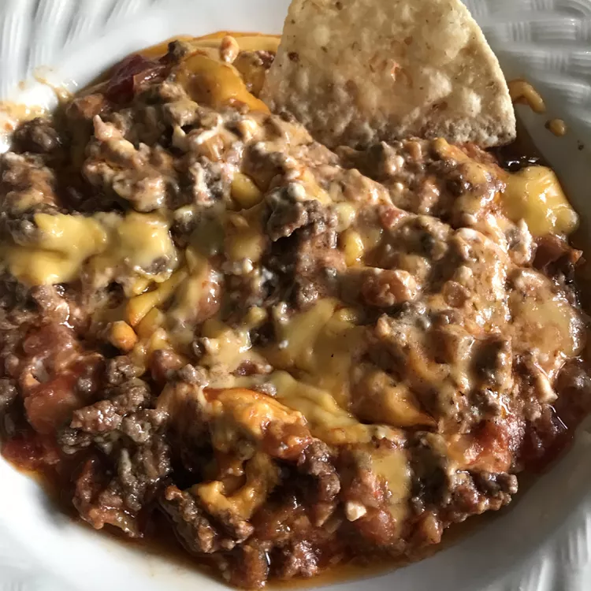

Best Football Dip Ever

Description
This dip is made for 3 to 6 men, sitting together on a Sunday, enjoying football and
eating every manly thing possible. Of course, my girlfriend and her friends love it too --
but this stuff doesn't last long. Serve with your favorite tortilla chips and enjoy!
Ingredients
- 1 pound ground beef
- 1 (8 ounce) package cream cheese, room temperature
- 1 (8 ounce) jar prepared salsa
- 1 (1 pound) loaf processed cheese food, sliced
Steps
- Preheat the oven to 400 degrees F (200 degrees C).
- Place the ground beef in a large skillet over medium-high heat. Cook, stirring to crumble, until no longer pink. Drain off grease.
- Spread the cream cheese in an even layer in the bottom of a 9 inch square baking dish. Spread a layer of salsa over the cream cheese, then cover with a layer of ground beef. Top with slices of processed cheese and cover the dish with aluminum foil.
- Bake for 15 minutes in the preheated oven, or until heated through. Serve hot.